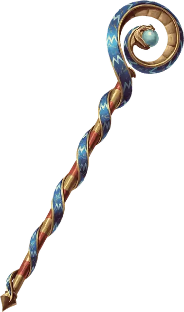

Посох правления
Staff of Ruling
Посох, редкий (требуется настройка)

Рекомендованная стоимость 501-5 000 зм
По всей своей длине красно-золотой посох оплетен украшением в виде змеи, на чешуе которой изображена текущая река. Пока вы держите его в руках, вы можете действием создать один из следующих эффектов. После того как посох создал эффект, он не может создать его снова до следующего рассвета.
Шаровая молния. Вы создаете Маленькую шаровую молнию в незанятом пространстве, которое вы можете видеть в пределах 60 футов от себя. Вы концентрируетесь на ней как при концентрации на заклинании. Бонусным действием вы можете перемещать шар на расстояние до 20 футов в любом направлении.
Когда прерывается ваша концентрация, а также если существо входит пространство шаровой молнии или начинает в ней свой ход, она взрывается сферой с радиусом 20-футов. Все существа в этой области должны совершить спасбросок Ловкости Сл 15. При провале цель получает полный урон электричеством, равный общему накопленному шаром урону. При успехе цель получает только половину этого урона. Базовый урон шара 6к6, и если в конце вашего хода шар не взорвался, его урон увеличивается на 2к6 до максимума 10к6.
Превращение в змею. Вы бросаете посох в незанятое пространство в радиусе 10 футов от вас, и он становится гигантской ядовитой змёй [giant poisonous snake]. Змея находится под вашим контролем, имеет такую же инициативу, как и вы, и ходит сразу после вас.
В свой ход вы можете мысленно отдавать команды змее, если она находится в пределах 60 футов от вас и вы не недееспособны. Вы определяете, какие действия ей совершать и куда перемещаться в следующем ходу, или же можете отдать общую команду, такую как «нападай на врагов» или «охраняй место».
Бонусным действием вы можете произнести командное слово еще раз или хиты змеи опустятся до 0, то посох возвращается в свой естественный облик, и он будет лежать в пространстве, ранее занимаемом змеей.
Раскат грома. Вы направляете посох в небо, создавая пугающий раскат грома. Каждое существо по вашему выбору в сфере радиусом в 30 футов с центром на вас должно совершить спасбросок Телосложения Сл 15, при провале становясь испуганным и оглохшим до конца вашего следующего хода.